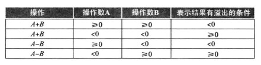

计算机组成原理
本文最后更新于：3 分钟前
计算机组成原理
计算机概要与技术
计算机系统结构中的八个伟大的思想
- 面向摩尔定律的设计
- 使用抽象简化设计
- 加速大概率事件
- 通过并行提高性能
- 通过流水线提高性能
- 通过预测提高性能
- 存储器层次
- 通过冗余提高可靠性
软件与硬件
- 应用软件
- 系统软件
- 操作系统：为了使程序更好地再计算机上运行而管理计算机资源的监控程序，主要功能有，处理基本的输入输出操作，分配外存和内存，为多个应用程序提供共享计算机资源的服务。
- 编译程序：将高级语言翻译为计算机所能识别的机器语言的程序。
- 硬件
- 输入设备：麦克风，键盘等为计算机提供数据的设备。
- 输出设备：扬声器，显示器等将计算结果送给用户的设备。
组成计算机的 5 个经典部件是输入，输出，存储器，数据通路（运算器）和控制器。其中最后两个部件合称为处理器。
性能与功耗
响应时间：执行任务总时间，包括硬盘访问、内存访问、IO、操作系统开销、CPU 执行时间
吞吐率：带宽，单位时间内完成任务数
CPU 执行时间
- 用户 CPU 时间：程序本身花费在 CPU 时间
- 系统 CPU 时间：为执行任务花在操作系统的时间
时钟周期：时钟驱动硬件发生事件，时钟间隔的时间成为时钟周期
时钟频率：时钟周期的倒数
CPU 时钟周期数 $=$ 程序的指令数 $\times$ 每一条指令的平均时钟周期数
CPI 表示执行每条指令所需的时钟周期数的平均值。
CPU 时间 $=$ 指令数 $\times$ CPI $\times$ 时钟周期时间
性能关注点：
- 系统性能：空载系统响应时间
- CPU 性能：用户 CPU 时间
- I/O 性能
功耗墙问题。
功耗的限制导致了微处理器的设计从单个处理器向多个处理器转变。
指令：计算机的语言
引言
指令集：一个给定的计算机体系结构所包含的指令集合。
- ARM：最流行的指令集。
- x86：PC 领域和云计算领域的统治地位
- MIPS
计算机硬件的操作数
设计原则 1：简单源于规整。
- 每条指令有且仅有三个操作数。
MIPS 中寄存器的大小为 32 位，故称 32 位一组为字。
字：计算机中的基本访问单位。
设计原则 2：越小越快。
- MIPS 中寄存器个数限制为 32 个，因为大佬的寄存器可能使得时钟周期变长。
计算机中有
- 存储器操作数
- 通过取数将数据从存储器复制到寄存器，通过存数将数据从寄存器复制到存储器
- 常数或立即数操作数
- 通过提高一个操作数是常数的指令，可以避免使用取数指令，加快速度
- 这是加速大概率事件的体现。
二进制数位：由计算机的高低电信号体现 1 或 0
有符号：二进制补码
- 前导位为 $0$ 正数
从 $0$ 不断加一所以不断增大直到 $2^{31}-1$ - 前导位为 $1$ 负数
到 $2^{31}-1$ 时，再加一变成 $-2^{31}$，再加加加到 $-1$
补码负数的二次幂表示：$-2^{31}+2^i$，所以最终加到 $-1$ - 可以通过二次幂表示计算十进制
- 运算结果溢出即前导位不正确
计算机中的指令
计算机中使用的是二进制数位来保存数字，包括有符号数和无符号数。有符号数和无符号数也对应着不同的取数指令，而取回有符号数需要使用符号位填充寄存器的所有剩余位，称为符号扩展。
MIPS 汇编语言可以被翻译成机器指令，机器指令分为若干个字段，这些字段有着不同的布局形式，称为指令格式。这些字段中，有些表示的是指令的功能，有些表示的是指令操作的对象。
对于 MIPS 指令的各个字段，有
- op：操作码
- rs：第一个源操作数寄存器
- rt：第二个源操作数寄存器
- rd：用于存放操作结果的目的寄存器
- shamt：位移量
- funct：功能码
设计原则 3：优秀的设计需要适宜的折中方案。
- MIPS 设计者通过保持剩余的指令长度相同，不同类型指令使用不同的指令格式这样一个折中的方案。
逻辑操作与决策
MIPS 提供了对字的若干位组成的字段的操作方式，这些指令称为逻辑操作。
逻辑操作主要有：
- 移位
- 逻辑左移
- 逻辑右移
- 算术右移
- 按位与
- 按位或
- 按位异或
MIPS 没有设计按位取反的专有指令，而是使用异或指令代替。
MIPS 中的决策指令包括有
- 条件分支指令
- beq：如果相等则分支
- bne：如果不相等则分支
- 无条件分支指令
- jump
循环：MIPS 可以通过迭代和分支指令实现循环的功能。
寻址
MIPS 有五种寻址模式：
- 立即数寻址：操作数是位于指令自身中的常数。
- 寄存器寻址：操作数是寄存器。
- 基址寻址：操作数在内存中，其地址是指令中基址寄存器和常数的和。
- PC 相对寻址：地址是 PC 和指令中常数的和。
- 伪直接寻址：跳转地址由指令中 26 位字段和 PC 高位相连而成。
程序的翻译执行
- 编译器：将高级程序语言转换成汇编语言程序。
- 汇编器：汇编称机器语言模块。
- 链接器：将多个模块和库程序组合，得到可执行程序。
- 加载器：将可执行程序加载到内存适当位置，就可以执行。
并行的任务往往是需要相互协作的，即任务之间需要同步，否则发生数据竞争
数据竞争：对于同一个地址有来自不同线程的访问请求可能有协作前后的关系，可能发生数据竞争导致数据错误
同步机制的实现：
- 通过加锁解锁同步操作创立一个仅允许单个处理器操作的区域——互斥区
- 多处理器实现同步需要一组硬件原语提供对存储单元进行原子读和原子写的能力，这些原语被程序员用来建立同步库
- 原子交换原语（寄存器中的一个值与存储器中的一个值交换）建立同步机制
- 原子存储器要求存储器读写操作都是有单条不可被中断的指令完成
计算机的算术运算
溢出：

在 MIPS 中，加法，立即数加法和减法这三条指令在溢出的时候会产生异常。而无符号加法，立即数无符号加法和无符号减法在发生溢出时不会产生异常。
加法器
串行加法器
超前进位的加法器
数的表示：二进制补码
浮点数（单精度/双精度）：符号位（1/1）+指数（8/11）+尾数（23/52）
IEE 754
处理器
引言与概述
计算机性能影响因素
- 编译器和指令集—指令数目
- 处理器实现方式—时钟周期长度，$CPI$
处理器的组成：
- 控制器
- 程序计数器PC：控制器中的寄存器，存放了下一条指令所在单元的地址。
- CU控制单元：控制单元，指令的操作码部分给CU（目的是经译码后，由cu上面的控制信号控制相应部件去执行指令要求的各种操作）
- IR 指令寄存器，存放当前欲执行的指令字段（指令码+地址码）
- 主存储器
- MAR 主存的地址寄存器用来读道取主存时缓存地址，PC中的地址码，取出的指令的地址码
- MDR 主存数据寄存器用来缓存从主存中读取的数据（包括指令）
- 运算器
- ALU算术逻辑单元，A通过指令字段的不同指令（指令码）执行不同的操作（类似数据多选器，操作由控制信号决定）
- 数据选择器
- PC：PC+4或分支目的地址
- MAR、MDR：数组来自ALU（算数）还是数据存储器（取数）
- ALU:输入来自寄存器堆（算数、分支指令时）还是指令的偏移量字段（存取指令）
单周期
建立数据通路
- 数据通路部件
- 部件种类
- PC，是一个32位的寄存器，在时钟周期末被写入新的地址
- 指令存储器（本书中区别于IR），组合逻辑 包含了整个取指过程
- 寄存器堆：处理器中的32个通用寄存器
- 数据存储器
- Add：组合单元，使来自指令数据通路的PC+4以指向下条指令
- ALU：对从寄存器堆读出的数据进行运算
- 符号扩展单元
- 部件种类
优化
五级流水：
- IF：取指令
- ID：指令译码或寄存器堆读取
- EX：指令执行阶段，例如ALU计算等
- MEM：表示存储器访问
- WB：写回寄存器
左侧阴影写入，右读出，无：资源不使用
冒险：下一个时钟周期中下一条指令不能执行
- 结构冒险
硬件不支持多条指令在同一时钟周期内执行 - 数据冒险
无法提供指令执行所需数据（数据依赖更早一条还在流水线指令）导致不能在预定时钟周期内运行
解决：前推（旁路），从内部寄存器中提前取出数据，注意目标步骤晚于原步骤
前推将结果从前面指令直接发送到后面指令，旁路把寄存器堆中的结果直接传递到需要的单元
特别的：取数-使用型数据冒险
解决：流水线阻塞 - 控制（分支）冒险
取分支指令后接着取下一条但流水线不知道下一条的地址（分支指令刚取出还要计算下一个跳转到的指令地址）
解决
取分支指令后立即插入一个周期的流水线阻塞（或者叫气泡）
硬件分支预测器：加入足够多硬件使流水线第二级能测试寄存器、计算分支地址并更新到PC
分支预测：预测分支结果并立即沿预测方向执行
延迟分支：把不影响分支的指令放到分支后面代替起泡隐藏分支延迟
流水线是一种在顺序指令流中利用指令间并行性的技术
流水线增加了同时执行的指令数目以及指令开始和结束的速率
存储器的层次结构
基本的原则和方法
程序访问方式具有局限性
- 时间局限性：例如循环，刚被访问的数据项可被再次访问
- 空间局限性：例如数组，某数据项被访问后，地址相近的数据项可能很快被访问
局限性应用
- 利用这种局部性将存储器组织成存储器层次结构：多存储器层次组成，存储器的访问容量和访问时间随离处理器的距离增加而增加
- 自然数据也被组织成这种层次化结构，常访问的数据放在离处理器更近的位置
块/行：存储信息交换的最小单位
命中率，缺失率
命中时间：访问存储所需时间包括判断是否命中
缺失代价：访问块、数据逐层传输、数据插入缺失层和将信息传给请求者的时间
- SRAM技术：靠近处理器的cache
- 静态随机存取存储器是一种存储阵列结构的简单集成电路
- 有一个读写端口，存储单元由晶体管组成，访问任何数据时间固定
- DRAM技术：主存储器即内存
- 以存储块方式组织，每个块上有许多行，每次pre后打开一个块act发送一个行地址将整行数据传送到缓冲器
存储单元通过在电容上保存电荷的方式存储数据，存储的每一位都是用- 一个晶体管实现读写电荷
需要周期性刷新（读出后写回）所以称为动态
采用两级译码结构：一个读周期后紧跟一个写周期的方式一次刷新一整行 - SDRAM使用时钟对存储器和处理器保持同步，在时钟控制下以突发方式传送连续数据
- 以存储块方式组织，每个块上有许多行，每次pre后打开一个块act发送一个行地址将整行数据传送到缓冲器
- 闪存：非易失存储器，个人设备二级存储器
电可擦除的可编程只读存储器 EEPROM
写操作可使存储位损耗 - 磁盘存储器：容量最大 最慢
寻道：磁头移动到磁道
旋转延时：等待待访问扇区转动到读写头下面
典型运用
Cache
直接映射：让每个字的主存地址对应到cache中一个确定地址
映射方法：索引=块地址mod（cache中块数） 如果块数是2的m幂 取主存地址后m位（不考虑字节偏移时）作为cache索引（索引即cache块号）
在cache中增加一组标记，包含主存地址高位的地址信息
有效位：标识一个块是否还有一个有效数据
cache缺失：数据不在cache中，需要到低层次存储中调入，此时引起流水线阻塞 与中断不同还会引起整个处理器阻塞
CPU时间=（CPU执行时钟周期数+存储器阻塞时钟周期数）×时钟周期
存阻时主要是因为读写操作时cache缺失导致的数据块重新存取的阻塞
存时=（读写的次数/程序数）×缺失率×缺失代价+写缓存阻塞
计算cache性能、平均存储器访问时间
通过更灵活的放置块来减少cache缺失
- 全相联：存储器中的块可以放在cache中任何一个位置，这需要检索所有的项，检索由一个与cache中每个项相关的比较器并行完成
- 组相联cache：块可以放置到cache中的部分位置。n组组相联：cache中很多组，每个组n各块，根据索引域，块直接映射到唯一一个组全相联到组内的任意位置。
索引到组：（块号）mod（cache中的组数）
每个组内所有块都要被检索
优缺点：降低缺失率，增加命中时间 - cache缺失和相联度
在cache中寻找一个块：
组相联或直接映射cache地址组成： 标记 索引 块偏移 （全相联没有索引）
- 直：索引选择块，标记用来比较是否为请求的数据项，字节偏移量用来选择字
- 组：索引位选择组，标记位和选中的组中的块进行比较来选择块，块偏移为请求数据的地址
替换块的选择
- 最近最少使用替换策略
- 计算各种相联下cache总组数和总的标记位数：先求直，组 组相联度加倍 索引位-1 标记位+1
使用多级cache结构减少缺失代价
- 二级cache处理一级cache的缺失
大数组，随着排序项的增加 基数比快排指令数要少但时钟周期数却多，主要是因为基数排序的平均cache的缺失率急速增加 - cache优化：在某个块被替换前重复使用块内数据。如此有了基数排序优化版
通过分块进行软件优化
- 分块算法：对子矩阵（块）进行操作，在数据被替换出前对装入cache的数据最大限度的访问
虚拟存储
一种将主存用作（磁盘实现的）辅助存储器的高速缓存（充当cache）的技术
页
- 虚拟存储器、物理存储器都被划分成页
- 块被称为页， 缺页：访问的页不在主存中
地址转换：处理器产生的虚拟地址结合软硬件转换成物理地址，映射到主存进而访问
重定位将虚拟地址映射到不同物理地址，也就是允许将程序加载到主存中的任意位置而不需要连续的块
页缺失代价是重大的，那如何设计
- 页足够大
- 设计降低缺页率的组织结构，允许存储器中的页全相联方式放置
- 通过软件选择置换页
- 虚拟存储器采用写回机制管理写操作
页的存放和查找
通过算法降低缺页率，
使用全相联方式放置页
- 问题：全部检索是不实际的
- 解决：通过页表来定位页
- 页表：保存虚拟和物理地址之间转换关系的表，页表保存在主存中，通过虚页号索引找到对应的物理页号
- 页表寄存器：指向页表首地址
缺页故障
TLB快表：用于记录最近使用地址的映射信息的快速缓存，位于处理器中的cache 这样就依靠了页表的访问局部性，避免一次页表的访问提高性能
处理TLB缺失和缺页
- 缺失的两种情况
- 页在主存，只需从主存取出页表项装入TLB
- 缺页：页不在主存，异常机制中断活跃进程将控制权传给OS来解决缺页，然后恢复执行被中断的进程
- 缺失的两种情况
虚拟存储器是管理主存和磁盘之间数据缓存的一级存储器层次，允许单个程序扩展空间，允许多个活跃进程共享内存，降低代价
降低缺失率的技术：
- 增大页的容量以便利用空间局部性降低缺失
- 使用页表实现的地址转换采用全相联方式，这样虚拟页可以放在主存中任意位置
- OS使用类似LRU和访问位技术来选择替换哪一页
- 写回机制并且通过脏位跟踪页是否发生改变 来降低写磁盘代价
3C模型
- 强制缺失：对从来没在cache出现的块第一次访问时
- 容量缺失：cache容纳不了一个程序所有的块，某些块被替换又被调入而产生的缺失
- 冲突缺失：组/直接映射的cache中，多个块竞争同一个组而引起cache缺失
结构设计对缺失率、性能的影响
- 增加cache容量：减少容量缺失，可能增加访问时间
- 提高相联度：减少冲突缺失，可能增加访问时间
- 增加块容量：由于空间局部性所以能降低缺失，，增加确实代价
本博客所有文章除特别声明外，均采用 CC BY-SA 4.0 协议 ，转载请注明出处！